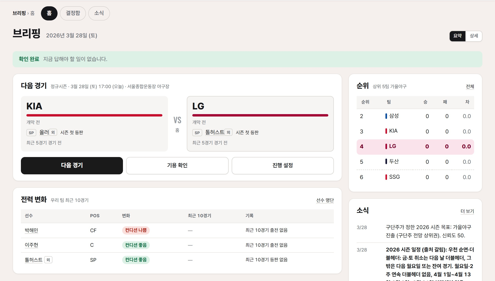
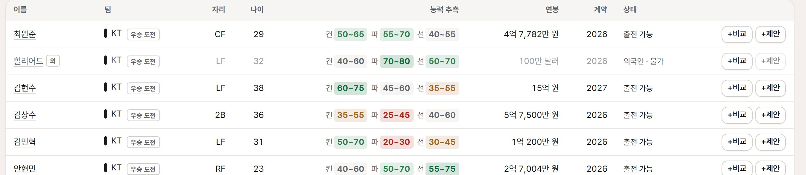
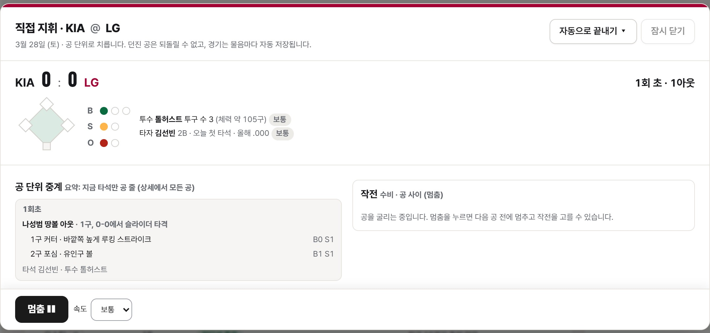

한국 프로야구 구단 단장 시뮬레이션 퍼펙트 매니지먼트를 2026년 10월부터 만들고 있습니다. 무엇을 만들지, 어떤 규칙이 재미있는지, 어디까지 허용할지를 제가 정했고, 코드와 측정은 제가 설계·운영한 AI 작업 조직이 맡았습니다. 이 문서는 그 결정들과 근거 숫자를 모은 것입니다.
옛 이름은 "KBO 단장 게임"입니다. 저장소 이름(kbo-gm)과 일부 화면 문구에는 아직 옛 이름이 남아 있습니다.
무엇
KBO 실제 선수·구단 기록으로 하는 웹 단장 시뮬레이션입니다. 1982~2026년 가운데 시작 해와 구단을 골라 정규시즌·가을야구·오프시즌을 거치며 여러 해를 이어 갑니다. 수익을 내지 않는 실험작이고 브라우저만으로 돌아갑니다.
누구를 위해
야구를 보며 "단장 나와!"를 외쳐 본 팬. 초보도 읽을 수 있는 화면, 기록을 좋아하는 팬이 알아볼 숫자, 세부를 파는 하드코어 팬이 좋아할 깊이를 함께 목표로 두었습니다.
핵심 재미
답지를 들고도 시험에서 떨어질 수 있을까. 플레이어는 누가 대성하는지 역사를 알지만, 천장·성장 성향·성장 시기는 숨어 있고 화면에는 스카우트 추측 범위만 보입니다. 알고 뽑아도 육성·부상·돈 관리에 실패하면 무너집니다.
숫자로 본 제작
36일
첫 커밋 → PR #164
2026-10-08 → 2026-11-12
861
커밋 (origin/main)
병합 커밋 포함, 그중 659개에 Claude 공동 저자 표시
162건
PR 병합
마지막 #164
94,006
TS/TSX 줄 (479개 파일)
게임 코드 src/ 61,968줄
1,345
자동 시험 통과 (PR #164)
시험 파일 179개, it/test 선언 1,263개
109
검증·변환 도구 파일
tools/ 폴더
766줄
사용자 결정 기록
날짜별로 적은 결정기록.md
217
테스트 케이스 (TC)
기능 영역 19개, 4절
커밋·PR·줄 수는 git으로 origin/main f69fca6에서 직접 셌습니다. 시험 1,345개는 PR #164 병합 때 전체 시험 실행 기록이고, 파일·선언 수는 이번에 시험을 돌리지 않고 파일만 센 값입니다 (it.each는 1개로 셈). 결정 기록은 저장소에 커밋하지 않는 로컬 문서입니다.
화면

브리핑 홈. 결정이 필요한 일은 "결정함"에 모으고, 홈에는 다음 경기·순위·전력 변화·소식만 둡니다. 구단은 글자와 팀 색으로만 표현합니다 (로고·유니폼·선수 사진 없음).

트레이드 후보 표. 다른 구단 선수의 능력은 "컨 50~65" 같은 추측 범위로만 보입니다. 스카우트에 투자하면 범위가 좁아집니다.

직접 지휘. 단장이지만 손이 근질거리면 그날 경기를 공 하나 단위로 지휘할 수 있습니다. 던진 공은 되돌릴 수 없습니다.
화면은 2026-11-05 무렵 개발 판 캡처입니다 (이전 포트폴리오 PPT에서 재사용).
2내가 한 일
코드는 대부분 AI가 썼습니다. 제가 한 일은 방향·규칙·결정·플레이 검수, 그리고 그 일을 돌리는 AI 조직의 설계와 운영입니다.
누가
한 일
나
무엇을 만들지, 어떤 규칙이 재미있는지, 어디까지 허용할지 결정. 직접 플레이하고 어색한 곳을 지적. 데이터·실존 인물에 대한 금지선. AI 조직 구성과 운영 규칙.
AI 코디네이터
일 나누기, 작업 카드 쓰기, 결과 확인, 병합, 보고. 결정이 필요하면 원인과 선택지 ①②③, 추천을 붙여 저에게 물음.
AI 직원
코드, 자동 시험, 측정 도구, 기획 문서 초안, 자료 조사, 이미지 시안.
결정 방식: AI가 원인과 선택지, 추천을 내면 제가 하나씩 고릅니다. 결정 기록 766줄에는 추천과 다르게 고른 경우도 "추천과 다름"으로 남아 있습니다.
결정 사례: 문제 → 결정 → 결과
① 숨겨진 특수능력을 공개 스킬로 → 다시 명예 칭호로
2026-10-21 → 10-26 · 정보 설계
문제
선수에게 숨겨진 특수능력이 있었지만 플레이어는 볼 수 없었습니다. 10-21에 "유저도 알 수 있게" 숨김 능력을 없애고 공개 능력 하나로 합치기로 했고, 획득 경로와 실존 선수 약점까지 기획이 진행됐습니다.
결정
10-26, 스킬 기획을 전부 취소하고 능력에 영향이 없는 명예 칭호로 바꿨습니다. 칭호는 기록·타이틀·커리어로 붙는 이름표이고 선수 화면·소식에만 보입니다. 그 해는 "현 홈런왕", 다음 해부터는 "홈런왕 ×2"처럼 횟수로 남깁니다. 레전드 별명도 아주 어려운 조건을 채우면 얻는 최상위 칭호로 넣었습니다 (기획 직원 추천 "기록 칭호만 먼저"와 다르게 결정).
결과
스킬은 밸런스 영향이 커서 나중으로 미루고, 칭호는 효과 없이 바로 넣을 수 있었습니다. 취소한 스킬 기획은 브랜치에 기록으로 남겨 다시 할 때 참고합니다. 숨은 능력 다섯 개(타구 억제·사구·부상 경향·회복력·기복)는 짐작 문구로만 보이게 유지했습니다: "유저가 다 보는 건 재미없다".
② UI 대개편: 정보 구조는 배우고 그림은 베끼지 않는다
2026-10-22 · UI·화면 규칙
문제
기능이 먼저 쌓인 화면을, 처음 하는 사람과 기록을 파는 팬이 함께 읽을 수 있는 구조로 다시 짜야 했습니다.
결정
목표를 "초보자도 보기 편하고, 야구 팬이 알 수 있고, 세부를 좋아하는 팬도 좋아할 UI"로 정하고, 대분류 메뉴 → 세부 화면 → 메인 화면 순서로 위에서부터 다시 짰습니다. Football Manager·OOTP의 정보 구조(메뉴 묶음, 소식 중심 홈, 탭 선수 상세)는 참고하되 그림·아이콘·색 배합·고유 명칭은 베끼지 않는다는 선을 그었습니다. AI가 그린 시안 가운데 "결정 브리핑" 안을 골랐습니다.
결과
브리핑·전력·영입·시즌·경영·아카이브 6개 대분류와 결정함 구조. 같은 날 정한 화면 규칙 두 가지도 지금까지 지킵니다.
수비 포지션은 화면에서 영문 약자(C 1B 2B 3B SS LF CF RF DH)로 통일. 대화·문서는 한글 그대로.
바뀌는 수치는 늘 전 → 후로 보여 줌. "그냥 띡 보여주면 유저가 얼마나 변했는지를 모르잖아." 첫해처럼 '전' 값이 게임 밖에 있으면 실제 기록 값(예: 2026 반발계수)을 끌어와 채웁니다.
③ 유료 데이터는 원본이 보이지 않는 것이 기준
2026-10-21 → 10-24 · 데이터 원칙
문제
능력치 정밀도를 높이려고 유료 기록 사이트(하드힛)의 자료를 쓰기로 했습니다. 약관은 비상업적 인용을 허용하지만 자동 대량 수집은 금지하고, 유료 회원 자료를 어디까지 공개해도 되는지가 문제였습니다.
결정
자료는 제가 직접 손으로 받고 AI가 계정으로 내려받지 않게 했습니다. 원본 CSV와 선수별 가공 파일은 저장소에 넣지 않고 git 기록에서도 지웠습니다. 기준은 "원본 값이 보이지 않는 것"으로 정리해, 합산·비율·게임 값 같은 가공값만 배포합니다. 출처와 원문 링크, 비상업적 이용은 정보 화면과 README에 적습니다.
결과
같은 원칙으로 실존 선수 규칙도 정했습니다: 로고·유니폼·사진을 쓰지 않고, 범죄·약물·징계·사생활 같은 극단적 부정 사건은 가상 선수에게만 넣으며, 부상·슬럼프·연봉 갈등 같은 일상 사건은 실존 선수에게도 넣습니다 (10-22). 실명 권리와 공개 범위 검토는 아직 남은 일로 적어 두었습니다.
④ 구단의 얼굴이 왜 시장에 나와 있죠? (프랜차이즈 스타)
2026-11-05·06 · 트레이드 AI 밸런스 · PR #160
문제
AI 구단이 자기 프랜차이즈 스타를 너무 쉽게 트레이드 시장에 내놓았습니다. 잰 값은 시즌당 2.31건, 제안 10건 중 3건이 스타였습니다. AI의 평가 함수가 재직 기간을 전혀 보지 않았기 때문입니다. 제가 남긴 지시는 "현실에서 거의 일어나지 않는 일이잖아".
결정
금지가 아니라 값으로 막았습니다. 재직·구단 WAR·칭호로 A(구단의 얼굴)·B(프랜차이즈 스타) 등급을 판정하고 가산치를 붙입니다. 판정에 칭호를 쓰기로 해서 "칭호는 AI에 안 쓴다" 규칙을 바꿨습니다 (기획 직원 추천과 다름). 처음 40런으로는 모자라 40 → 120런으로 올렸고, 그래도 A 선수 요구에 AI가 값을 부르는 비율이 43%여서 목표 30%를 고쳐 받아들였습니다.
결과
AI가 먼저 내놓는 스타 거래 2.31 → 0.20건, 남은 것은 모두 B 등급. 우리에게 온 A 제안 52 → 0건. 승률 격차와 FA 흐름은 그대로였습니다.
⑤ 타율이 떨어진 범인은 외국인 투수 재계약이었다
2026-11-06 → 11-10 · 원인 찾기 · PR #159·#161·#162
문제
외국인 선수가 평균 5년 넘게 머물렀습니다 (실제 KBO 1.57시즌). 재계약 기준을 고치고 개발 판을 합치자 이번엔 리그 타율이 .261 → .254로 떨어졌습니다.
결정
쉬운 답(타율 보정값 키우기) 대신 기능을 하나씩 더해 가며 나눠 재기로 했습니다. 하락은 외국인 재계약 칸에서 났고, 원인은 재계약 판단이 투수를 실제보다 약 12런 낮게 봐서 투수만 떨어지는 것이었습니다 (남는 비율 타자 56%, 투수 21%). 외국인 타자가 늘자 장타 압력이 문턱을 넘고, 미래 규칙이 공을 죽여 타율이 내려간 연쇄였습니다. 고침: 투수 판단 영점 +5런, 타자 문턱 43 → 48런. 남은 장타 압력은 신인 천장 배율을 10 → 9.75로 고쳐 맞췄습니다 (9.5는 20년 뒤 리그 기량이 −6.8%라 고르지 않음).
결과
머무는 시즌 → 1.70, 재계약 비율 48.1% (실제 약 50%). 장타 압력 1.154 → 1.105 → 1.050 (문턱 1.07 안). 리그 타율 .2518 → .2550. 측정 도구 자체의 셈 빠짐도 찾아 고쳤습니다 (머무는 시즌 2.64가 다시 세니 1.69). 타율 .26대 복귀는 남은 과제로 적어 두었습니다.
⑥ 100시즌을 돌렸더니 380승 투수가 나왔다 (노화 곡선)
2026-11 · 장기 밸런스
문제
100시즌 자동 평가에서 가상 투수 한 명이 통산 380승을 올렸습니다. 가상 선수가 거의 늙지 않아 통산 150승 투수가 100시즌에 24~43명 나왔습니다 (실제 기준 11.4명).
결정
스타 선수의 나이별 WAR을 실제와 견줘 하락을 키웠습니다. 타자 −3런·투수 −3.5런부터, 투수는 28세부터 조금씩 떨어집니다. 대신 20년 뒤 리그 전체 기량이 시작값에서 크게 벗어나지 않는지를 같이 지켰습니다.
결과
통산 150승 23.3 → 10.7 → 6.7명 (100시즌 환산). 20시즌 뒤 상위 270명 기여는 시작값의 −2.2%. 처음에는 −16~−27%로 리그가 쪼그라들었습니다.
⑦ 측정은 판단을 대신하지 않는다: 이도류는 그대로, 구단 투표는 뺀다
2026-11-04 · 11-12 · 재미 판단
문제
자동 평가는 이도류(투타 겸업) 선수가 100시즌에 33~74명으로 실제 기준(1~10명)보다 많다고 했습니다. 또 구단끼리 규칙 변경을 투표하는 "단장 회의"를 손보는 기획 인터뷰를 했습니다.
결정
이도류는 기준 밖이어도 재미로 그대로 두었습니다. 단장 회의는 개편안(Q5~20)까지 정한 뒤 다시 보고 기능 자체를 빼고 리그가 결정하는 방식으로 바꿨습니다. 이어서 이름만 있고 효과가 작은 기능을 정리하는 인터뷰에서 효과가 미미한 이벤트 58종은 선택지 없이 소식으로만 내리고, 남는 선택지는 차이가 0.3승 또는 5억 원 이상이 되게 키우기로 했습니다.
결과
예전 저장은 호환을 유지하면서 화면·진행에서 단장 회의를 껐습니다. 점수가 낮은 항목을 다 고치지 않고, 낮은 항목 20개를 다음 작업 목록으로 쓰는 방식이 자리 잡았습니다.
사례 수치 출처: 이전 포트폴리오(2026-11-10, main 9e4484d)와 저장소 보고서, 결정기록.md. 장기 측정은 시드 3~4개 값이라 운의 폭이 있습니다. 2026-11-12 이후 결정(⑦의 단장 회의·이벤트 정리)은 기획이 정해진 상태이고 구현 여부는 이 문서에서 확인하지 않았습니다.
3제작 방식: AI 조직을 설계하고 운영했다
여러 AI 세션을 병렬로 돌리는 도구(Orca) 위에 회사처럼 역할을 나눴습니다. 사람은 저 한 명이고, 저는 결정과 검수만 합니다.
일하는 단위
카드 한 장 = AI 세션 하나. 카드에 범위, 고칠 파일, 금지, 시험, 보고 양식을 적어 AI가 파일을 뒤지며 토큰을 쓰지 않게 했습니다.
결정이 필요하면 "원인 + 선택지 ①②③ + 추천" 형식으로 올라오고, 저는 한 번에 하나씩 고릅니다. 기획 질문은 인터뷰 형식으로 라운드마다 묶어 받습니다.
기획이 끝난 범위는 허락 없이 개발을 이어 가고, 새 기능·main 병합(배포)·삭제만 저에게 묻게 했습니다.
숫자로 정한 운영 규칙
토큰을 세션별로 재는 스크립트를 만들게 해서 봤더니, 하루 Claude 사용량 약 11억 3천만 토큰 중 99%가 캐시 읽기였습니다. 오래 붙어 있는 세션이 문제였습니다.
그래서 상주 세션은 코디네이터 하나만 두고, 직원은 일이 끝나면 닫고, 맥락이 커지면 교대하며, 5분마다 오던 "살아 있음" 신호를 금지했습니다.
모델은 일의 성격으로 나눴습니다: 판단·설계는 Claude Opus, 중간 크기는 Sonnet, 짧은 개발은 Codex, 단순 기획·조사는 Gemini.
PC가 느려진다는 이유로 무거운 시험은 한 번에 하나씩 줄 세우고, 카드 중에는 빠른 시험(약 1분)만, 전체 시험은 병합 전에만 돌리게 했습니다.
조직 구성은 2026-10-15~16에 여러 번 고쳤습니다 (부서장 세션을 두는 v2 → 상주 세션을 하나로 줄인 v3.1). 토큰 수치는 2026-10-15에 Orca 운영 전체(같은 시기 다른 프로젝트 포함)를 잰 값이고, 여기서 정한 규칙을 퍼펙트 매니지먼트 제작에도 썼습니다.
4QA: 재현할 수 있게 만들고, 케이스로 적는다
"재현되지 않는 버그는 고칠 수 없다"를 처음부터 설계 조건으로 삼았습니다.
결정적 엔진
난수는 시드에서만 나오고 시각·Math.random을 쓰지 않습니다. 같은 시드·조작이면 끊김 없이 돌린 판, 저장 후 이어 돌린 판, 조작 기록을 다시 재생한 판의 결과가 같습니다.
재현 정보 한 줄
조건·위치·에디터 사용 표시·조작 기록·데이터 지문을 한 줄로 복사할 수 있습니다. 화면 오류가 나도 이 줄을 복사하고 시작 화면으로 나갈 수 있습니다.
버그 보고 예
"창단이 있는 해의 오프시즌 화면이 하얗게 된다" (치명). 재현: 2012 시작 → 시즌 끝 → FA "다음" 한 번. 원인: 끝난 시즌은 8구단, 리그 상태는 9구단. 회귀 시험을 더했습니다.
테스트 케이스 문서
퍼펙트매니지먼트_TC.xlsx · 기준 origin/main f69fca6 · 작성 2026-11-25. 구현된 기능만 TC로 쓰고, 기획만 있는 기능 22개는 "미구현·예정" 시트에 따로 두었습니다. 각 TC에 근거 파일 경로(기획 문서·화면 코드·자동 시험 이름)를 달았습니다.
217
TC
기능 영역 19개
48 · 96 · 73
우선순위 P1 · P2 · P3
P1 = 출시 전 반드시 통과
51 · 37
경계값 · 예외
기능 93, UI 21, 회귀 15
22
미구현·예정
별도 시트
기능 영역별 TC 수
ID
기능 영역
P1
P2
P3
합계
PM-OFF
오프시즌
9
9
5
23
PM-ROS
선수단·엔트리·기용
6
10
3
19
PM-TRD
트레이드
6
8
3
17
PM-FIN
재정·연봉·샐러리캡
0
7
10
17
PM-GAM
경기 엔진·일정
2
6
8
16
PM-SAV
저장·불러오기·재현
6
7
2
15
PM-UIX
화면 공통·메뉴
0
5
7
12
PM-ADV
진행·멈춤·이벤트
2
8
1
11
PM-CMD
직접 지휘
3
4
4
11
PM-PST
가을야구·시상·칭호
1
5
5
11
PM-MKT
시장·외국인·스카우트
1
7
2
10
PM-REC
기록·아카이브·검색
0
3
6
9
PM-STA
시작·새 게임
2
3
3
8
PM-EDT
에디터 모드
2
3
3
8
PM-OWN
구단주·난이도·도전
2
1
4
7
PM-DEV
성장·훈련·병역
0
4
3
7
PM-POL
숨김 값·실존 선수 규칙
4
1
1
6
PM-FAN
판타지 모드
2
3
0
5
PM-RUL
리그 규칙·시대
0
2
3
5
합계
48
96
73
217
대표 TC 4개
ID · 유형
항목
절차 · 데이터
기대 결과
PM-STA-004 기능P1
같은 연도·구단·시드·난이도면 같은 결과
2026 LG, 시드 abc, 보통으로 시작해 일주일 진행 후 순위 기록 → 같은 조건으로 다시 시작해 일주일 진행
두 번의 순위·경기 결과·박스스코어가 완전히 같다 (버그 보고 재현의 기반)
PM-TRD-010 경계값P1
트레이드 마감 다음 날 거절
마감일(7월 31일) 다음 날 트레이드를 제안
"선수 등록 마감(7월 31일)이 지났습니다" 문구로 받지 않는다. 마감 당일은 된다
PM-TRD-009 예외P1
외국인 선수 트레이드 불가
우리 외국인 선수를 넣어 제안 → 상대 요구안에 외국인이 있는지 확인
규정 위반으로 거절되고, 상대 요구안에도 외국인이 없다
PM-SAV-009 예외P2
데이터가 바뀐 뒤 저장 (지문 불일치)
데이터 갱신 전 저장 파일을 갱신 뒤 불러옴
"게임 데이터가 저장할 때와 달라 이 저장을 이어갈 수 없습니다 (선수 구성이 바뀜)" 오류가 보인다
엑셀의 '결과' 열은 Pass / Fail / Block / N/A 목록으로 비워 두었습니다 (수행 기록은 아직 없음). 엔진 수치 밸런스(리그 평균 대조)는 자동 검증 스크립트 영역이라 TC에서 뺐습니다.